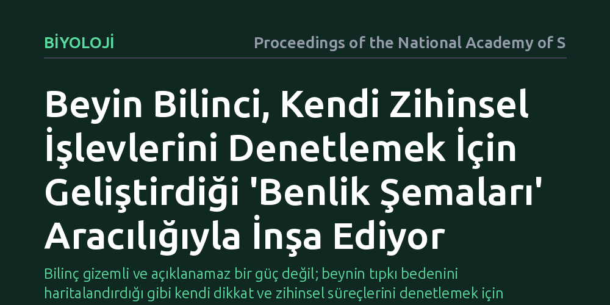

BIYOLOJI · Proceedings of the National Academy of Sciences · 2026-10-25
Çalışma, bilincin sadece dikkat ve bellek gibi işlevlerin yürütülmesinden mi yoksa bunların iç modellerinden mi doğduğunu araştırıyor. Bulgular, beynin kendi bilişsel süreçlerini izleyip yönetmek için kurduğu basitleştirilmiş benlik şemalarının bilinci oluşturduğunu öne sürüyor.
Bilinç gizemli ve açıklanamaz bir güç değil; beynin tıpkı bedenini haritalandırdığı gibi kendi dikkat ve zihinsel süreçlerini denetlemek için yarattığı sadeleştirilmiş bir iç modeldir.

İnsan beyni gün boyunca durmaksızın karar alır, anıları depolar ve çevredeki uyaranlara dikkat kesilir. Uzun yıllar boyunca nörobilimciler, bilinci bu karmaşık işlemlerin doğal bir yan ürünü ya da hesaplama gücünün doğrudan bir uzantısı olarak gördü. Ancak dikkat veya karar alma gibi süreçlerin bilinçli bir farkındalık olmadan da gerçekleşebildiği kanıtlandıkça, bizi bir şeye "farkında" kılan asıl mekanizmanın ne olduğu sorusu önem kazandı.
Bu makale, insan bilişinin yalnızca hafıza, karar ve dikkat gibi işlevleri icra etmekten ibaret olmadığını savunuyor. Beyin, dış dünyayı modellediği gibi kendi iç süreçlerini de modellemek ve bu modeller aracılığıyla kendisini denetlemek zorundadır. Bu mekanizmanın çözülmesi, hem insan zihninin doğasını hem de yapay zekanın gerçek bir öz farkındalık kazanıp kazanamayacağını anlamak için somut bir temel sunuyor.
Yazarlar tek bir laboratuvar deneyi yürütmek yerine, bilişsel nörobilimin yarım yüzyılı aşan deneysel birikimini bir araya getiriyor. Özellikle görsel korteksi hasarlı olduğu halde hedeflere doğru elini uzatabilen ancak bunu gördüğünün farkında olmayan körgörü vakaları ve dikkatin farkındalık olmadan yönlendirilebildiğini gösteren klasik çalışmalar inceleniyor.
Ayrıca ayrık beyin ameliyatı geçirmiş hastaların davranışları ile insanların gözlerinin önündeki büyük değişimleri bile fark edemediği dikkat körlüğü bulguları kuramsal modele dahil ediliyor. Bu deneysel kanıtlar, beynin bilgi işleme kapasitesi ile o bilgiyi bilinçli olarak deneyimleme hissi arasında belirgin bir ayrım olduğunu açıkça ortaya koyuyor.
Çalışmanın öne sürdüğü temel tez, beynin karmaşık bilişsel işlevlerini yönetebilmek için onların basitleştirilmiş birer modelini, yani "benlik şemalarını" inşa ettiğidir. Tıpkı beynin bedenimizi korumak ve hareket ettirmek için eksik ama kullanışlı bir beden şeması kurması gibi, dikkat süreçlerini denetlemek için de bir dikkat şeması geliştirir. Makalede belirtildiği gibi, "Beyin yalnızca bilişsel işlevleri yürütmekle kalmaz; bu işlevleri izlemek, tahmin etmek ve yönlendirmek için onların şematik modellerini de inşa eder."
Bilinç, bu basitleştirilmiş modellerin bir araya gelmesiyle çalışan bir kontrol mekanizmasıdır. Beyin bu modellere baktığında derin nöronal karmaşıklığı değil, "içimde odaklanan, hisseden ve deneyimleyen bir ben var" bilgisini okur. Böylece öznel farkındalık, gizemli bir töz değil, beynin kendi veri akışını yönetmek için kullandığı pratik bir iç harita haline gelir.
Bu model, bilincin ulaşılamaz bir sır olduğu yanılgısını ortadan kaldırarak onu biyolojik bir izleme ve tahmin aracına indirgiyor. Zihin tek parça ve bölünmez bir merkez değil; birbiriyle konuşan ve birbirini denetleyen şemaların oluşturduğu bir topluluktur. Beyin bedeni ve organları nasıl temsil ediyorsa, dikkati, hafızayı ve duyguları da aynı kurallarla temsil etmektedir.
Bu bakış açısı, yapay zeka sistemleri için de somut bir çerçeve çiziyor. Bir yapay zekanın bilinç benzeri bir yapıya kavuşması, yalnızca daha fazla veri işlemesiyle değil; kendi dikkatini, hedeflerini ve sınırlarını izleyen özyinelemeli benlik modelleri inşa etmesiyle mümkün olabilir.